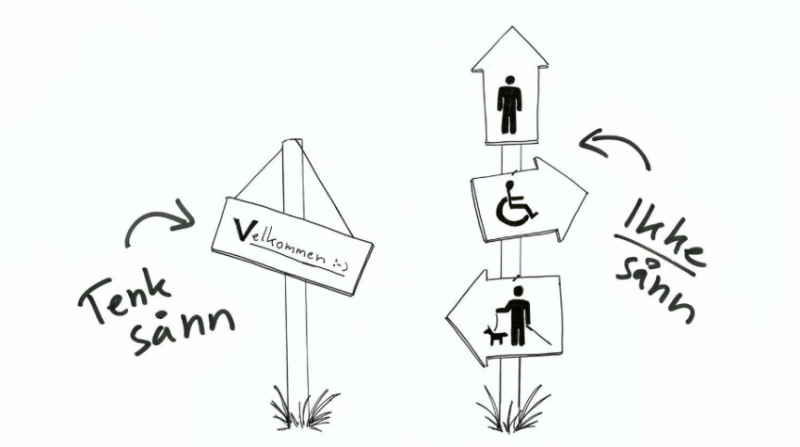

UU VS SEO
UU - Universell Utforming
I denne teksten skal jeg forklare hva UU og SEO er, hva de er og hvordan det implementeres eller oppnås.
UU står for Universell Utforming, og går ut på å designe tjenester som er tilgjengelig for alle uavhengig av deres omstendigheter - dette kan for eksempel være ramper for rullestolbrukere, blindeskrift på knappene i heisen, hjemmelevering av dagligvarer eller produkter for hjemmeværende, osv... Men hverdagen blir mer og mer digital, og da er det også viktig å tilrettelegge de digitale verktøyene slik at disse også er tilgjengelig for alle. Men hvordan oppnås dette og hvorfor er det så viktig?
UU er viktig for at alle individer får muligheten til å delta i samfunnet. Nå til dags gjøres det aller meste på nett - betaling av regninger, skole, nyheter, handel, underholdning osv...Uten tilrettelegging av disse tjenestene vil det oppstå et funksjonsgap, altså et skille mellom det samfunnet krever av individet og hva individet er i stand til å gjennomføre. UU handler helt konkret om å justere på kravene til samfunnet, samtidig som individets forutsetninger blir styrket. Hvordan gjøres dette?
Det er fire hovedgrupper som må tas tilsyn til, disse er individer med nedsatt motorikk, syn, hørsel, og kognisjon:
For en bruker med nedsatt motorikk kan det være utfordrende å navigere nettsiden med mus eller touchskjerm. En løsning kan være å gjøre nettsiden navigerbar via enkle tastatur-input, eller å ha muligheten til å forstørre grensesnittet som gjør det enklere å trykke seg rundt.
Synshemming tar form i svaksynthet, blindhet, og fargeblindhet. Disse individene har ofte problemer med små fontstørrelser og elementer, svake kontraster, og visse fargekombinasjoner. For at blinde skal kunne benytte seg av nettsiden må de ta bruk av en skjermleser. En skjermleser leser innholdet høyt ved bruk av en talesyntese og behøver god kode for å fungere ordentlig.
Hørselshemming angår individer med nedsatt hørsel til total døvhet. For at hørselshemmede individer skal kunne benytte seg av nettsiden er det viktig at all ikke-tekstlig informasjon, som for eksempel videoer eller lydopptak, har undertekster. En annen løsning er at brukeren bruker spesielle høreapparater som kan forsterke og filtrere lyd-input fra datamaskinen.
For individer med kognitive funksjonsnedsettelser kan innhold som baserer seg hovedsakelig på tekst være vanskelig å forstå. Derfor er det viktig å variere innholdet med video, bilder, lyd osv... slik at brukerne kan lettere få en helhetlig forståelse av innholdet.
Det er i dag en rekke metoder webutviklere kan bruke for å gjøre nettsidene sine universelt utformet og mer tilgjengelig for alle. Etter hvert som den digitale hverdagen blir mer og mer dominant er det viktig at flere nyttige verktøy dannes, slik at det er mulig å delta på egne vilkår.
SEO
SEO eller søkemotoroptimalisering er viktig for at nettsiden din skal være lett å oppdage for søkere ved bruk av søkemotorer som Google, Bing, og DuckDuckGo.
Når din nettside skal bli indeksert, altså synlig på nett, blir den gjennomskuet av svært avanserte algoritmer. Disse algoritmene vurderer hvor ryddig og ordentlig koden er skrevet og om visse krav dekkes. Basert på hvor høyt nettsiden scorer tilsier også hvor lett nettsiden er å søke seg frem til. Hvis Google digger nettsiden din, får du mer trafikk.
Som nevnt, er det kraftige algoritmer som indekserer nettsidene på internett. Algoritmen vurderer ikke nødvendigvis selve innholdet på siden, men hvordan koden som holder på innholdet er strukturert. Om strukturen på koden er lett for algoritmen å indeksere vil dette score plusspoeng.
Korrekt bruk av Header-elementet blir lagt mye vekt på. Google setter blant annet pris på at man bruker H1 én gang og deretter etterfølger med undertitler skrevet i H2, H3, H4, osv... H1 bør inneholde søkeordet du vil brukere skal finne nettsiden ved, og de etterfølgende undertitlene bør inneholde variasjoner av det samme søkeordet. Dette kombinert med god metatittel og -beskrivelse, som ytterligere beskriver nettsidens innhold for brukeren, gjør at siden din stiller sterkere.
Optimalisert bildebruk er også viktig for å score høyt - bilder som har meningsfulle filnavn er lettere å finne på bildesøkemotorer, og en god bildebeskrivelse gjør det lettere for blant annet synshemmede å benytte nettsiden via talesyntese. Bildene bør også være små i filstørrelse og ha korrekt format da dette gjør nettsiden mye raskere å laste og tar mindre bredbånd.
Søkemotorer vurderer ikke selve innholdet på siden, men de måler hvor fort brukerne klikker ut. Hvis nettsiden har irrelevant innhold som ikke er nyttig for brukerne, vil de neppe bli lenge. Kort og konkret innhold som hjelper brukerne med å oppnå det de ønsker, er best.